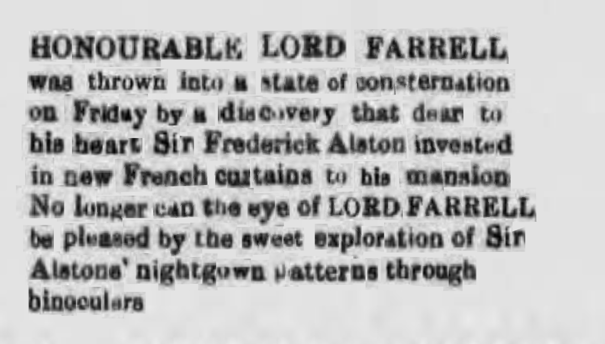
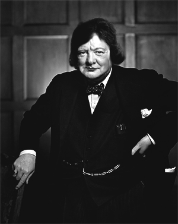

In order to answer these questions we shall go back to 1757's household of merchant Antoine Orlando in Paris, where his long awaited child is being born. The great joy doesn't last long, since it quickly turns out that the child's gender is hard to determine. The baby holds both types of genitals. Terrified parents decide to establish the newborn's identity as male and give him the name Alexandre. They never spread the problematic information further.
Four decades later, Alexandre Orlando becomes one of the most influential people in France. After quadrupling family's fortune, hir gets acknowledged at the royal house of Bourbon as a friend and adviseur. It has been speculated that Orlando's intersex gender was known among the elites and that hir has been involved in a romantic relationship with the latest king before the French Revolution, Louis XVI. The monarch is beheaded in 1793 and the Revolution develops. Orlando manages to avoid consequences of belonging to the royal circles and joins the revolutionist, attempting a sabotage in which hir would avenge the king. After some time spent among the revolutionists, hir starts being convinced about their ideas and the plan of revenge is dismissed. Alexandre Orlando becomes a leader of the French Revolution and hir gender is revealed. Alexandre's skills in economy and strategy seemed to be more important than the feminine part of hir's identity, so the society decides to accept hirs dissimilarity.
Orlando turns hirs devotion for the revolt towards hirs own revolution of gender. Hir strongly condemns the abolishing of all of the Revolution's women's clubs by Jacobin, who was the most influential political club of the period. The crushing of the women's movement took place in October 1793 and resulted in arresting of the female clubs' leaders. In 1795 Orlando applies for re-establishment of those and partly succeeds. From around 30 female clubs, the existence of which has been recorded before Jacobin's invasion, 7 reborn thanks to Orlando. Hir himself has been maintaining a status of not belonging to any of the clubs. In this way, hir was allowed to take part in meetings of many, staying transparent and confronting ideas of those, raising debates and aiming on focusing on common goals. Orlando's incredible dyplomatic skills and financial genious provided hir with respect of the most prominent clubs, which seems even more exceptional if we consider the fact that hir was commonly known for mingling with Bourbons before the Revolution. In 1796 hir comes out officially and requires to be referred to as Hermaphrodite Orlando. The revolution in the approach to gender is progressing, as Hermaphrodite acquires powerful position and proposes the new French church to consider making space in its structures for people like hir. The Church is firstly negative, but later decides to make a pact with Orlando in order to improve their poor situation after being separated from the state.
In 1801 the Humano Sexualis decrete is being signed by both parties, where the Church promises to break down gender-based limitations on all levels. This is a groundbreaking event in the history of sexuality. The new open face of the French Catholic Church bridges the divisions, confusion, pain and bitterness of the previous decade. 90 years later, first woman, Elisabeth Williams becomes a pope and she takes the name of Catherine the I.
How did the lifting of patriarchal gender limitations for ordaining for priesthood influence the deeply male-dominant social structures of XIX century' France? Or in other words - what did society say about a non-male priest? The fact that not only males were allowed to ecclesiastical structures anymore, mainly meant introducing women to church, since intersex people like Orlando were in a great minority, ofter (if not always) living in a closet.
The first few decades were turbulent. The French Church suffered significant decline after the Revolution and even though the new open-minded and modern policy attracted some parts of the society, it sickened the others. There have been repetitive cases of churches being set on fire all over the country in churches that consisted of not exclusively male priests. A lot of public debate took place whether women are able to learn the art of the higher state of serving God than nunhood, whther their spiritual priestly vocation is possible. A lot of politicians, folks and priests argued that the Humano Sexualis is a profanation of the Constitution of Christ who ordinated only men for his apostles. The response of the French Church was that like in early Christianity, women should be allowed to serve as deacons, priests and bishops, and that there isn't any biblical reason to prohibit women's ordination.
"Humankind was created as God's reflection: in the divine image God created them, female and male, God made them." - Genesis 1:27
"In Christ there is no Jew or Greek, slave or citizen, male or female. All are one in Christ Jesus." - Galatians 3:28
The approach of the French Church was highly opposite both to the European standards and the earlier standpoints of the church itself. Before Humano Sexualis, the highest role a female catholic could serve was nun. Women had no political rights in pre-Revolutionary France, neither were their voices or meaning acknowledged by the Church. Only after Revolution took its toll on the Catholic Church by confiscating its property, eliminating privileges as well as massive executions on priests during the Reign of Terror, the approach shifted. After years of brutal oppression, the Concordat of 1801 between Napoleon and pope Pius VII is signed, restoring the Catholic Church in France. The fast response of Orlando to the event helps defining the new face of that Church in the still rough times. It has been commonly argued that the gender direction change in the French Church wouldn't have ever happened without Orlando's suggestion and non-males might not be authorised priesthood in churches worldwide for centuries to come.

Humano Sexualis influenced the global approach to gender, although women kept being seen as the second category humans, always establishing inferior positions in parishes. Despite the decree, until XX century the majority of French churches didn't give positions for women to hold, which is a texbook example of how strong the male supremacy was at the time. Not only the superiors didn't put trust in women though. Apart from extreme cases like church building arsons and female priest killings, the parishioners were demonstrating less regard to them compared to the inviolable male priest's persona. Bishop Eloise Deschamps elaborates on this topic in her book "Deliberations on a Female Servant".
"Priestesses of the French Catholic Church after Humano Sexualis were exposed to a very questionable respect and general mistreatment. For the exceptional ones that managed to hold position it was common to be located in the rectorial basements, often together with nuns. They rarely were given opportunity to provide confessions as well as participate in Eucharistic procedures. Their role was rather vague, somewhere between a nun and Deaconess, depending on the parishes individual policy. The regulations considering non-male priests didn't exist. Hence formally they all were liable to the same laws. Nevertheless it took a century for the female priests to pave their way to the higher ministry corresponding to their spiritual vocation. These yet were the fruits of the hardship of the revolutionary times of our Holy commonwealth. The wisdom of the Lord resides in the challenges he puts on us. Last decades are the proof of the great achievements built on devotion and strength of the individuals. We have always been, are and will be vulnerable to the culturally based habits, prejudices supported by years and years of practice. The question is how to apply the learning of Jesus Christ to our contemporaneity? How to find the truest value of tradition and separate it from teh relics of our sore history? How to sort the wheat from the chaff? Our duty is to seek for the divine form of our reverence of God. This process takes place since the beginning of Christianity and shall continue as we, believers should always take effort to improve our ministry with a great commitment. My predecessors from the dawn of XIX century were never acknowledged with a bow by the folk. They couldn't baptise nor bury. They devoted themselves to the hardship of the service, knowing that they are likely to be killed by those who were blinded by false values. yet they persisted, as we should all persist with our faith."
Admittance of non-male priest to the French Church lead to the situation we are living now, where no longer does gender define believers' role or potential.
Yet how did it correspond to the transformations in the secular understanding?
Despite the fact that French Revolution caused decline of Catholic power and almost disappearance of the Church, religion was the main root of sociologic standards in various areas. This phenomenon hasn't changed even after French de-Christianisation, therefore when Humano Sexualis was introduced, there appeared a chance for consideration about patriarchy and the role of women in the society.
The claims of first wave feminist movements received more attention, not only in France. Humano Sexualis has encourged women to be persistent with their statements and has often been used as an argument for letting women also in the other institutional structures and education. More voices have been raising to argue whether women are really inferior to men and what is it that decides upon limiting their potential and opportunities. In countries like United Kingdom, Netherlands, Sweden and United States feminist issues and gender roles were being written about in media and literature, and slowly the laws started to be passed on the topics like economic separation from husbands, owning and managing properties, being employed in schools as teachers. In 1833, Ohio opened the first co-educational university.
Firstly the opportunities on the formal level of economy, politics, management and education, and later the time has come to address the sociological issues, like reproduction and sex, cultural position of women in the society.
Here we come to the point where the heavily oppressed and tabooed topic of sex starts appearing in popular news media and becomesgenerally acknowledged as an issue that requires attention. It wouldn't be possible to start the research on the development of sexuality and transformation of the understanding of sex without talking about the great achievements of feminists and Orlando, as they were the ones to start turning the wheel in both areas: perception of sexuality and gender equality.
It is not needed to explain how strict were the social codes concerning sex in those times. Even though human nature was always finding its ways when it comes to premarital sex, homosexuality, bisexuality, polyamory etc., it was never being openly confronted. Heterosexual, monogamous marriage followed by appearance of offspring was a condition of decency and fulfilling the expectations of the social status quo. Nevertheless people were staying in multiple relationships, having affairs, lovers, spreading illnesses and satisfying their need for not-heterosexual love - everything as long as it wasn't revealed to the eye of the public, as long as the family, neighbours and children didn't see.
The abolition of gender limits in churches has spread to other countries, once Pope Leo XV filed such right in and reconnected with the French Catholic Church, admitting the righteousness of Humano Sexualis. Hermaphrodite Orlando died in 1809 aged 52. Although it has been always questioned whether someone who was so close to Bourbons once, should hold priviledges in the post-revolutionary France, Napoleon held Orlando in high esteem throughout the whole time. It has been even proved that they were exchanging letters, discussing the economic issues of France. After Orlando's death, intersexuality has been officially introduced to France as an alternative gender, and has been studies in Medical Studies. Soon, the French knowledge and heritage of Orlando opened the minds of British and German scholars and started being adapted.
Meanwhile pope Leo XV, took over after Pius VII, who dies in 1812 from the flu after being held in poor conditions in Savonne by Napoleon. Leo XV introduced more liberal projects, decriminalising divorce and listening to the female voice in the church. He appointed the first female bishop in 1820. Her name was Catherine and she was a British priestess from Manchester.
Since the introduction of women in the churches, more attention has been given to the topics of the family, social structures, respect and love of the other. That was happening along further achievements of feminists in Europe, but also worldwide. In 1823 in India, Sati, teh tradition of forced suicide of widows is banned. In Brasil in 1825 the first elementary schools for girls are opened. Women in general stopped being seen as belongings of men and due to that, the female independent identity was being gradually discovered.
Enlightenment made it possible for the human reason by the use of observation to investigate the laws of our nature, while not having to appeal to the doctrines of the Church or the eye of God.
At the same time, the Industrial Revolution contributed to the economic independence of women. Instead bearing the role of informal business partners in their husbands' shops, they started being acknowledged as workers who are as fit to work in factories as their husbands, sometimes even more then them. For both parties (women and the industry) that was a beneficial turn.
In 1852, Irish printers working for the historical Freeman's Journal started secretly and unofficially printing a humorous addition to their newspaper, without the knowledge of the journalists and writers. It was a one paragraph incorporated in the spread consisting of erotic writings and later small sized illustrations, either making fun of famous figures or providing articles and imagery of inappropriate and pornographic content. The Freeman's Special was a project brought by a group of approximately 20 anonymous creatives, writers and artists, cooperating with the printing press workers. The addition was produced in small quantities and discretely distributed within the ones in the know. The costs of production were included in the expenses of the real Freeman's Journal, so that the press was unconsciously sponsored by the radically Protestant and nationalistic newspaper. However it was the matter of time before the world has discovered the indecent creation of the Irish boheme. On 20th March 1854, accidentally the printers sent to the shops the 'wrong' version of the Journal, among the hundreds of the official copies. The Freeman's Special was in the end just the Freeman's Journal with the content of one box replaced, so it wasn't difficult for printers to make the mistake. Unwary customers read among the advertisements of furnished lodgings and open vacancies, a three sentence story on Sir Edward O'Brien's intimate fascination on Lord Mayor Edward Mc Donnel.

"Honourable Lord Edward Mc Donnel was thrown into a state of consternation on Friday afternoon, by a discovery that dear to his heart Sir Edward O'Brien invested in new French curtains to his mansion. No longer can Lord's eye be pleased by the sweet exploration of his platonic friend's nightgown's patterns through binoculars. "My eyeballs fancy the vision of disappearance of thy silks, yet not the appearance of these unsightly curtains!"
Underneath the paragraph was a little icon depicting naked Sir O'Brien with erect penis. The release brought an incredible controversy, but also a significant increase in the Journal's demands. The chief editor of the Journal fired the entire printing group and sent for a replacement. Printshop workers lost their income and gained a bad reputation. In order to avenge the wrong, they committed to print the last edition of Journal consisting entirely of 'Special' content, and flee the country with their families in order to prevent enormous financial fines and possible jain sentences. they managed to distribute the obscene paper, but were afterwards caught by the police before leving the country. The packages of prints thrown carelessly into the streets of Dublin went like hot cakes, before police managed to seize them. Gossips on the sexual lives of Irish elites and unconventional sexual practice descriptions spread in the society, giving people piquant insight to the other faces of sex and making an impression as if in the higher classes homosexuality, bisexuality, orgy and other hedonistic sexual activities were completely common and accepted.
Even though the erotic literature was in great extent just fiction, the impact on the approach to sex was huge. The simple little illustrations of nudes and people making love in many different ways were most popular. The lucky owners of the special Freeman's Journal Special were cutting the paper in bits and confidentially selling them for prices that could equal to a monthly living costs. The interest in rare, yet known forms of lovemaking and the focus on pleasure were growing. In 1858, in the Cavendish Laboratory, Cambridge University establishes a course in human sex as a prat of curriculum in Biology, Medicine, Anatomy and Anthropology programmes. Five years later, the similar progress takes place in Sorbonne.
Studies over human nature bring revelations concerning sexuality and gender. United Kingdom declares the phenomenon of homosexuality as no longer a disease, but an alternative sexual orientation thanks to scientist Numa Numantius. Women are given voting rights in successive countries. Sexual Studies in 1860s start exploring the mysterious area of orgasmic pleasure. Masturbation, which for long time had been condemned as a sinful deed that could result in insanity and illness, has been proved by scientists not to be connected to any of the above mentioned and started being even prescribed in certain psychological conditions. The explanation of the human pleasure yet was a serious challenge to the scholars. Presence of female and intersexual students and professors at the leading European universities made it possible to explore different experiences.
For centuries before the sexual boom, in Christianity-dominated Western Europe, sexual pleasure used to be associated with evil, which should be avoided through the strict rules of procreative, heterosexual and post-marital monogamy. Any form of research was hardly possible to conduct due to the heaviness of the taboo. Nevertheless there have been certain studies over the topic of sex and pleasure. One common aspect though that connects all of the writings from Hippocrates to Enlightenment is that they were always assuming 'male' to be the default unity, 'female' as the secondary supplement and other types of genders and sexualities were immensely ignored. The studies were being always conducted by male scholars and despite honest comprehensive efforts, the narrative over explanation of sex and attempt to define the sensation was in all of these sources highly limited to one kind of perception.
Only after the introduction of sexual studies and broadening the range of universities' participants, there became an opportunity to pick up the topic of sexual experience and make examination of other types of sex and sexuality, so far not properly studied. Alexis Tagaras's studies were comparing the impact of orgasm on bodies in different types of sex: hetero-, homosexual (both male and female), self-indulged through masturbation. The studies were revolutionary, as the notions of masturbation and homosexuality used to be still avoided. The outcomes have shown that in all cases, pleasurable satisfaction rates were higher in sex with partner rather than solitary masturbation and that females were experiencing wider variety of sensations and of stronger intensity, both in cases of homo and heterosexual intercourses. Further psychological investigation of Tagaras and his students who overtook the studies after hirs death in 1870 gave a proof for the beneficial implications of sexual satisfaction on mental health and well-being as well as physical health and immunity. In one word, the world has opened up to a thought that sex in deed isn't as evil as it used to be thought and there is no longer an argumentation for such conservative chains to hold people from pursuit of pleasure.
The decriminalisation of homosexuality resulted in huge interest of homosexuals in studies of sexuality, hence there was a significant shift in the societies of educational institutions from being heteronormative and male-dominated into becoming epicentres of liberated nature and intelectual discoveries motivated by sociological transitions.
Catholic church took an attitude of sharing the awareness of human weakness and sensitivity and was warning from the sin of harming. Pope Catherine I appealed to Christians that in the era of human liberation we need to keep away from causing harm to the other for the sake of our own needs. She argued that orgasmic pleasures are made by God to us, the people and that sharing such pleasure isn't sinful, as long as we treat our bodies with respect and care, being aware of the dangers of addictions, deviations and adultery. She was the one to legalise the homosexual marriage, staying firmly on the side of faithful monogamy, but not being particularly stern on premarital sex, although never officially admitting consent to it. She was also opposed to abolition of celibacy, even though in the end it happened during the reign of her succesor, pope Marcellus III.
The fact that leading Western European universities started having wider variety of students when it comes to gender and sexual orientation had also an effect on how 'male' wasn't being seen as the default anymore. Biological and psychological studies started being propagated in the second half of XIX century, bringing revolutionary discoveries over women's psychology and differences conditioned by gender. Studies proved that we all differ and instead of attempting to standardise power structures due to male preferences, we could use the potential of all humans in leading sustainable and democratic societies. In that period armies and governmental institutions started employing female members, after Queen Victoria made an appeal that the United Kingdom's future lays in wisdom and effective work of all citizens, calling ministries, courts, universities and other institutions to employ the minimum of 30% non-male employees. This brought satisfying effects to the economy, management and limited the corrupted networks. The great success of Victoria's enactment became known abroad. Already liberated France and other countries like Spain, Netherlands, Belgium, Sweden, Denmark, Germany and the Austro-Hungarian Empire ruled similar laws until the end of XIX century. Year 1902 was significant time of reflection over past transitions. New British Prime Minister, Constance Gilligan gave her famous speech:
"Through centuries we have claimed that governing a powerful country takes place with supposedly inevitable downpour of human blood. Innocent, unnecessary. In old, manly times, political systems were focused on power, separation, wealth and strength. Strength that was meant to destroy. Destruction that was meant to show greatness. Today we are entering the times not of a man. Today, we are entering the times of the human. Today we are aware of being interconnected, we are aware of the presence of the other, our impact on the other and of the fact that together with that other we are creating something much bigger than what we are alone. Today we will grow. Today we will see. Today we will think. We are a great country. And Today, we will know how to be what we are in a great way."
Which in political terms meant dismissing their reign over all worldwide colonies and renouncing their ownership of different type of economical, resource and cultural goods. It was a brave move for the Great British Empire, since they could keep their endless sources of benefits and still be one of the leading political giants of the world till this day. They could, with continuing explitation and inhumane practices, which has been finally admitted. In those times being accountable for one's impact on another entity in a political sense was rare. Under a cover of democracy, nations were leading their barbaric political games, not facing the reality of what the global outcome might be.
Gilligan's speech put the light on the connection between new ways of conscious governing of the empire and the psychological discoveries of the previous century. A good reference - probably the one that inspired the prime minister with the speech - would be to quote the American Psychiatrist and Sociologist, Carol Linklater, reflecting on the topic of taking one's voice. She writes:
"Feminine refusal of taking one's voice is motivated by psychological protection - caring about other's feelings and awareness of relations. On the other hand it makes it easier for the patriarchal system to dismiss women's views.
[...]
Female approach to the conflict was often deeply admonishing. They were constantly trying not to disrupt the order of interrelations. What made their voice differ was the concern about the relations in the world that is rather focused on separation and building barriers between people."

Introducing non-heterosexuals and non-male individuals to the positions of governing structures brought relief to the dominant phenomenon of general aversion to any form of leadership/strategy that might denote a deliberate renunciation of the signs and privileges of the masculine role.
Not only because of the balancing of that phenomenon with the numbers of differently conditioned women, man and others. Also due to the fact that men who used to comply to the previous system, didn't have to bear the pressure of meeting the manly expectations. Within years it started being obvious that less oppressive/brutal/competing representations of power are possible, and moreover, can be as successful.
 Trobriant islands belong to Papua New Guinea and have been inhabited by indigenous people. In Trobriant society it is a taboo to eat in front of other people. The islanders consume their meals alone, shunning from the eye of others. But the activity they are more comfortable about is sex. Both male and female inhabitants are free to have as much sexual intercourse and partners as they want before and during being married.
Trobriant islands belong to Papua New Guinea and have been inhabited by indigenous people. In Trobriant society it is a taboo to eat in front of other people. The islanders consume their meals alone, shunning from the eye of others. But the activity they are more comfortable about is sex. Both male and female inhabitants are free to have as much sexual intercourse and partners as they want before and during being married. I find it truly fascinating how sex for them is just a 'thing'. What is it that made sex so problematic then in our world? Sociology and sexuology give the answer that is not truly our nature to be so problematic and oppressive on the topic of sex, it is rather the history and culture that through centuries have shaped our traumas, discomforts and fears, regulations, gender norms, denials of different orientations, morals, guilt which we started assigning to particular parts of our bodies.
I find it truly fascinating how sex for them is just a 'thing'. What is it that made sex so problematic then in our world? Sociology and sexuology give the answer that is not truly our nature to be so problematic and oppressive on the topic of sex, it is rather the history and culture that through centuries have shaped our traumas, discomforts and fears, regulations, gender norms, denials of different orientations, morals, guilt which we started assigning to particular parts of our bodies.